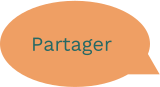
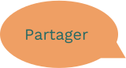
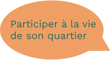
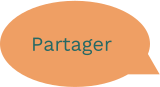
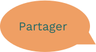

L'anti-gaspi
Entre voisins, c'est quoi?


 

Entre voisins, c'est quoi?
Nous c’est Laetitia, Philippe et Marie.
On habite dans différents quartiers de Montreuil et on a
décidé de dire stop au gaspillage alimentaire.
Notre mission, avec Voisins Anti-Gaspi,
c’est de réduire au maximum nos
déchets en rapprochant les gens et
ainsi faire vivre la vie d’un quartier.

Tu habites à Montreuil, tu veux
participer à la vie de ton quartier par le biais d’un projet
commun, l’anti gaspi.
Tu es au bon endroit.
Avec Voisins anti-gaspi tu peux donner et/ou bénéficier des
surplus alimentaires de tes voisins.
Tu peux consulter si un de tes voisins veut faire un don sur
le calendrier et réserver un don dans ton point de collecte
Et si tu veux faire un don, tu peux t’inscrire et remplir le
formulaire de don.
Ensuite rien de plus simple tu choisis la date et l’heure à
laquelle tu es disponible et tu viens déposer ton don a ton point de collect.
ça marche?